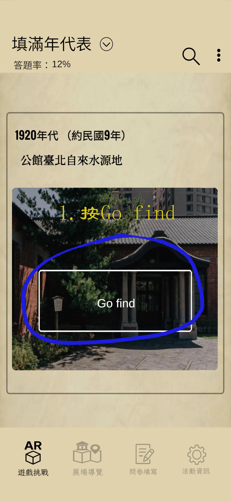
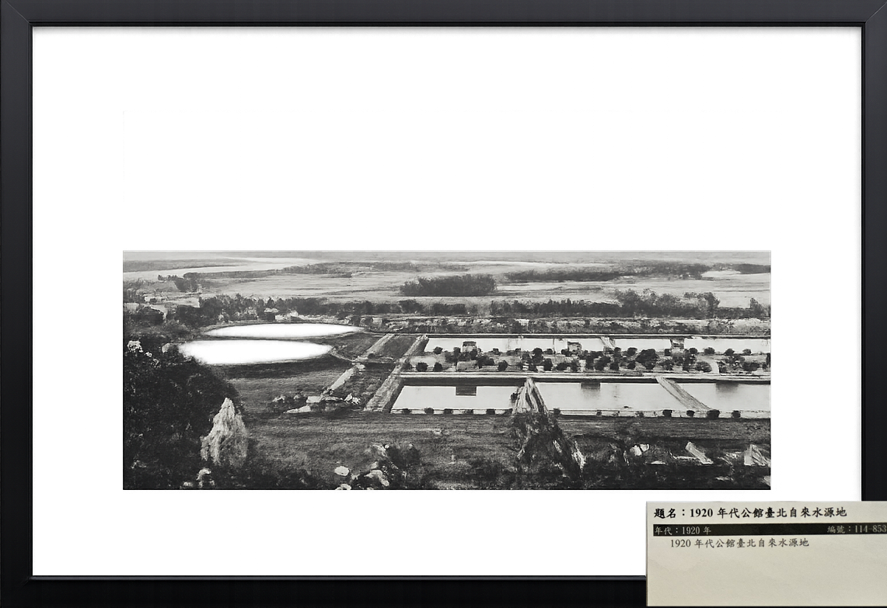
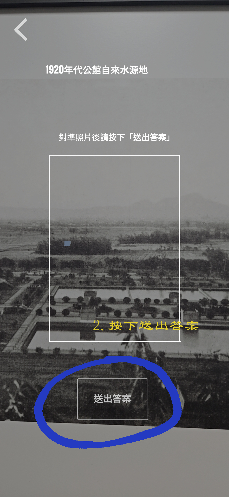
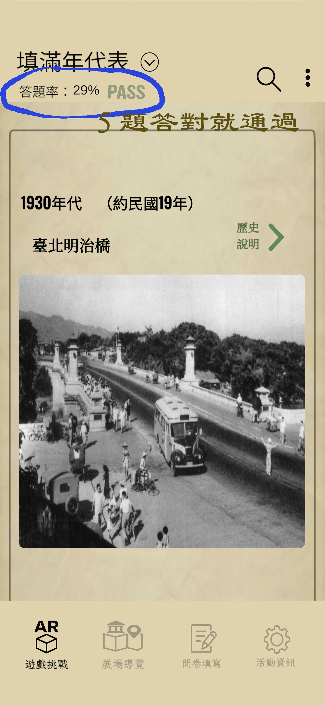

尋找老照片 AR 小遊戲 APP 說明
透過 APP 進行「尋找老照片」AR 小遊戲。您可選擇先觀看上方說明影片，或依照下方步驟操作。 答對5題請來櫃檯領禮物，加油!
1. 先找到正確的老照片
請先在 APP 下方選擇「遊戲挑戰」。 展場中每一幅老照片的裱框右下角，都有一張標示題名與年代的老照片解說牌。
找到與 APP 顯示內容相同的老照片後，確認題名與年代都跟 APP 相符， 再按下 「Go find」 進入 AR 掃描畫面。



2. 進入 AR 掃描並送出答案
畫面進入 AR 鏡頭後，請對準相框中的老照片， 按下 「送出答案」， AR 模型會幫忙辨識圖像。

○ 如果答對，畫面會顯示「你找到我了！」，按下「回年代表選單」老照片會回填至年代表， 並且計入正確答題。部分老照片回填後會有「歷史說明」，可以點進去觀看影片與 AI 動圖。
✕ 如果您沒有選到正確的照片，畫面會顯示「不是這張」。
填答成功示例：


3. 累積答題進度並完成挑戰
左上角會顯示目前答題率。當答對 5 題後，會出現 PASS 標示， 請持此畫面至櫃檯向工作人員領取禮物。
＊禮物數量有限，送完為止。
